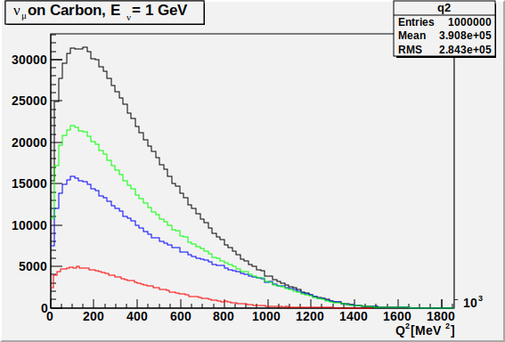

ROOT macros
There are some basic examples of using the interactive ROOT mode to extract informations from a NuWro output file in the previous section. Usually, what you really want is to have a ROOT macro to do that. This section contains some examples of how to prepare them to work with events generated by NuWro.
You can find ROOT documentation here
Preparing a sample¶
For the examples in this section the following sample was generated:
- beam: muon neutrino with energy = 1 GeV
- target: Carbon
- channels: all CC
- no. of events: 1 000 000
using the following command:
nuwro -i numu_1gev_carbon_cc.txt -o numu_1gev_carbon_cc.root
with the following numu_1gev_carbon_cc.txt settings file:
#################### # General settings # #################### number_of_events = 1000000 // the number of events to generate ################# # Beam settings # ################# beam_type = 0 // single-flavor beam beam_particle = 14 // muon neutrino beam_energy = 1000 // mono-energetic beam (1000 MeV) ################### # Target settings # ################### @target/C.txt // Carbon ######################### # Interactions settings # ######################### dyn_qel_cc = 1 // charged current quasi-elastic dyn_qel_nc = 0 // neutral current elastic dyn_res_cc = 1 // charged current resonant pion production dyn_res_nc = 0 // neutral current resonant pion production dyn_dis_cc = 1 // charged current deep inelastic scattering dyn_dis_nc = 0 // neutral current deep inelastic scattering dyn_coh_cc = 1 // charged current coherent pion production dyn_coh_nc = 0 // neutral current coherent pion production dyn_mec_cc = 1 // charged current 2p2 dyn_mec_nc = 0 // neutral current 2p2h ########################################## # Interactions settings: (quasi-)elastic # ########################################## qel_cc_axial_mass = 1030 // axial mass [MeV] ########################################### # Interactions settings: two-body current # ########################################### mec_kind = 3 // Nieves et al. model
Note
You can see that numu_1gev_carbon_cc.txt does not include all parameters
(like e.g. nuwro/data/params.txt settings file example).
For all parameters which were not provided in a settings file NuWro will use default values as described here.
Basic plots¶
Histograms created by Draw¶
In the previous section you can find some basic examples for using the Draw function to make plots, e.g.
tree->Draw("-q2()")
The Draw function can be also used to create ROOT histograms, e.g.
tree->Draw("-q2() >> my_histogram")
will draw the histogram but also save it in TH1F *my_histogram. Pretty handy.
You may want to use Draw to create TH1 objects w/o actually drawing them.
Well, just turn graphics off:
tree->Draw("-q2() >> my_histogram", "", "goff");
Having said that, take a look at the following macro (basic_plots.c):
void basic_plots(char *filename) { ///// LOAD FILE AND TTREE ///// TFile *file = new TFile(filename); TTree *tree = (TTree*)file->Get("treeout"); ///// CREATE HISTOGRAMS ///// // Q2 distribution tree->Draw("-q2() >> q2", "", "goff"); // Q2 distribution only for QEL events tree->Draw("-q2() >> q2_qel_true", "flag.qel", "goff"); // Q2 distribution for events w/o any pion in the final state tree->Draw("-q2() >> q2_qel_like", "fof(211) + fof(111) + fof(-211) == 0", "goff"); // Q2 distribution for non-QEL events w/o any pion in the final state tree->Draw("-q2() >> q2_bkg", "!flag->qel && fof(211) + fof(111) + fof(-211) == 0", "goff"); ///// HISTOGRAM SETTINGS ///// q2->SetLineColor(kBlack); q2->SetTitle("#nu_{#mu} on Carbon, E_{#nu} = 1 GeV"); q2->SetXTitle("Q^{2} [MeV^{2}]"); q2_qel_true->SetLineColor(kBlue); q2_qel_like->SetLineColor(kGreen); q2_bkg->SetLineColor(kRed); ///// SAVE HISTOGRAMS ///// // first you need a canvas TCanvas *c = new TCanvas; q2->Draw(); q2_qel_true->Draw("same"); // "same" -> on the same plot q2_qel_like->Draw("same"); q2_bkg->Draw("same"); c->Print("numu_1gev_carbon_cc.q2.svg"); }
At the beginning a file is loaded and a right tree is pointed. Get used to it as every of your scripts is going to start like this. Histograms are created using Draw function (as explained above):
Draw("what >> histogram", "[conditions]", "[graphics off]")
Setting up labels, colors etc. are not worth to discuss here - it is not ROOT tutorial after all. Please see ROOT documentation for more informations.
Instead of using default c1 canvas we create our own.
Now, every histogram->Draw() call will be put on the canvas.
Please note, that if "same" option is not used,
current content of the canvas will be overwritten.
Finally, Print function is used to save the plot to SVG file.
Please note, that the main function in the macro has the same name as the macro file. It makes it easy to run the macro directly from the command line:
myroot -b -q 'basic_plots.c("numu_1gev_carbon_cc.root")'
-b stands for batch mode (w/o graphics) and -q is to exit ROOT after
job is done.
This call is equivalent to:
$ myroot -b root [0] .L basic_plots.c root [1] basic_plots("numu_1gev_carbon_cc.root") root [2] .q
The final plot ("numu_1gev_carbon_cc.q2.svg"):
